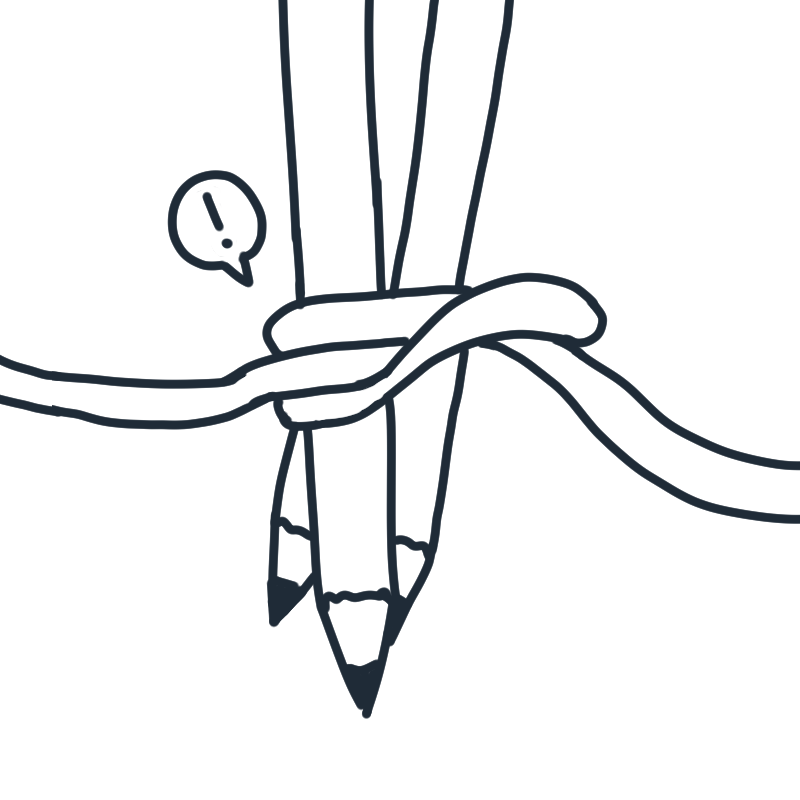
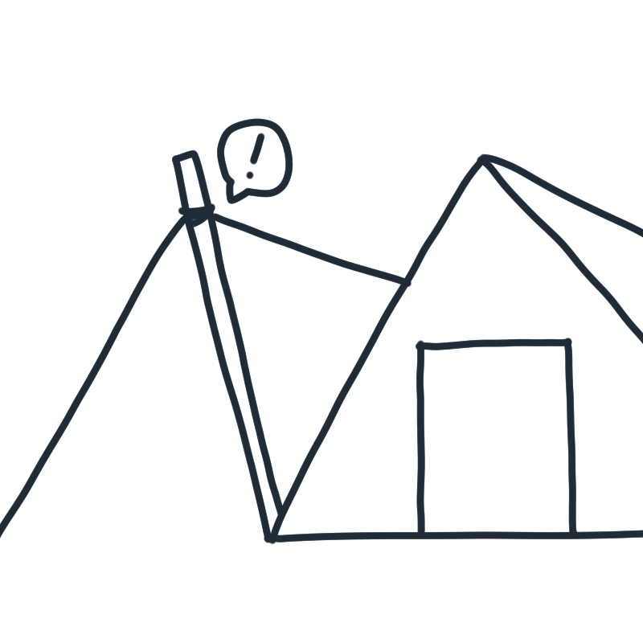
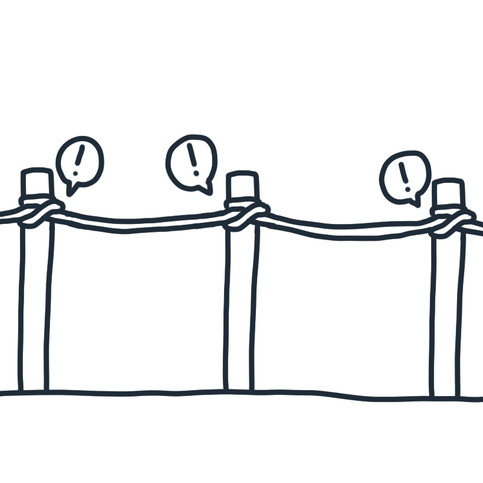
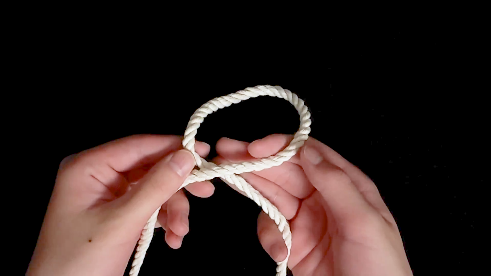
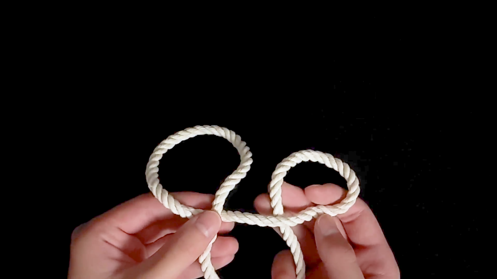
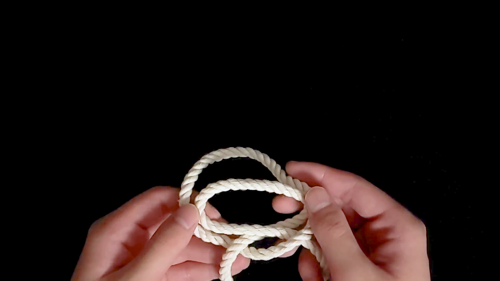
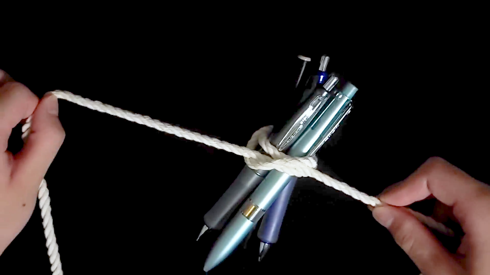

巻き結びについて
所要時間: 3分程度
巻き結びという結び方を知っていますか？結び方が簡単で覚えやすく、スピーディーに結べる優れたヤツなんです！
また、緩みにくく簡単に解け、幅広い用途で役立ちます！主に次のような用途があります。
用途

ペンなどをまとめる

テントの支柱を縛る

柵をつくる
今回はそんな巻き結びを、動画付きでわかりやすく説明します！
動画
※音声が出せない環境の方は、YouTubeの字幕機能をご利用ください。
結び方
今回はペンを結ぶことを例として紹介します。
STEP11つ目の輪を作る
両手で紐を持ち、紐の入りが上になるように輪を作ります。
TIPS
ここでは、紐の左の方を入り、右の方を抜きとしています。
STEP22つ目の輪を作る
1つ目の輪の右に、紐の抜きが下になるように輪を作ります。
STEP32つの輪を重ねる
作った2つの輪を重ねます。
TIPS
先に作った輪を上にしてください！
STEP4ペンをくぐらせ結ぶ
輪の中に結びたい対象を入れ結びます。
これで完成🎉 お疲れさまでした！